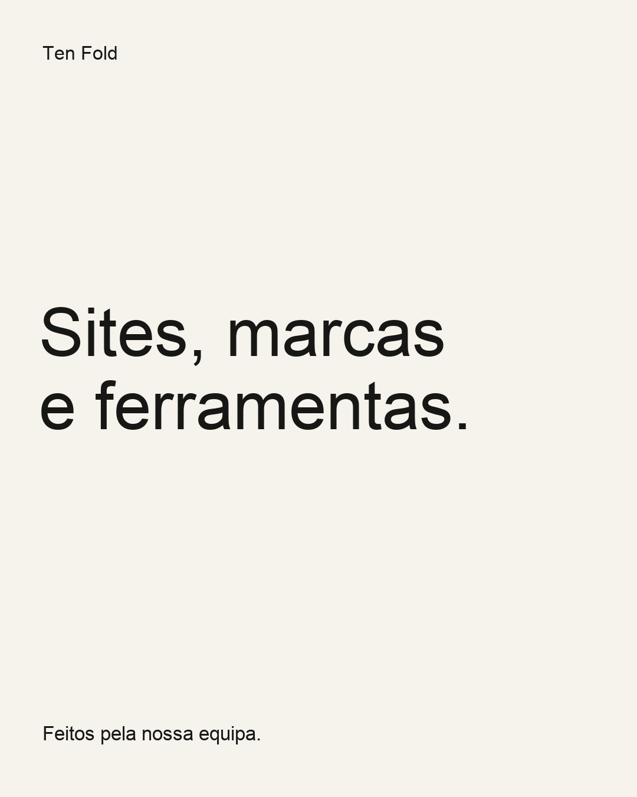

Legenda · PT / EN
Somos uma equipa pequena. Fazemos sites, identidades visuais e ferramentas para organizar trabalho. Por aqui vamos mostrar o que estamos a construir.
We’re a small team. We build websites, visual identities and tools to organise work. This is where we share what we’re making.